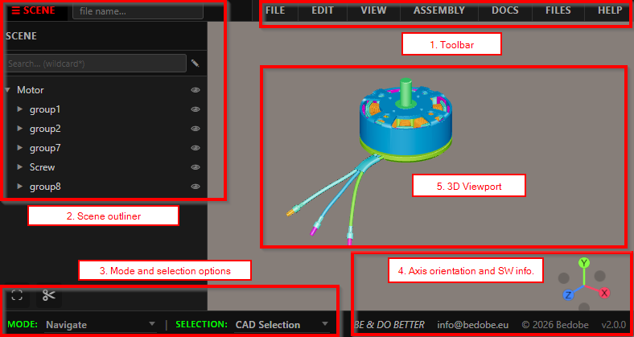
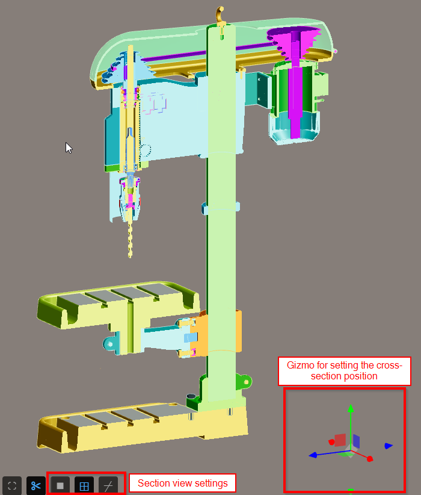
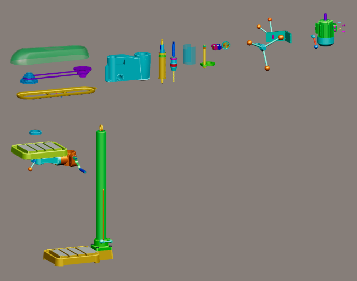
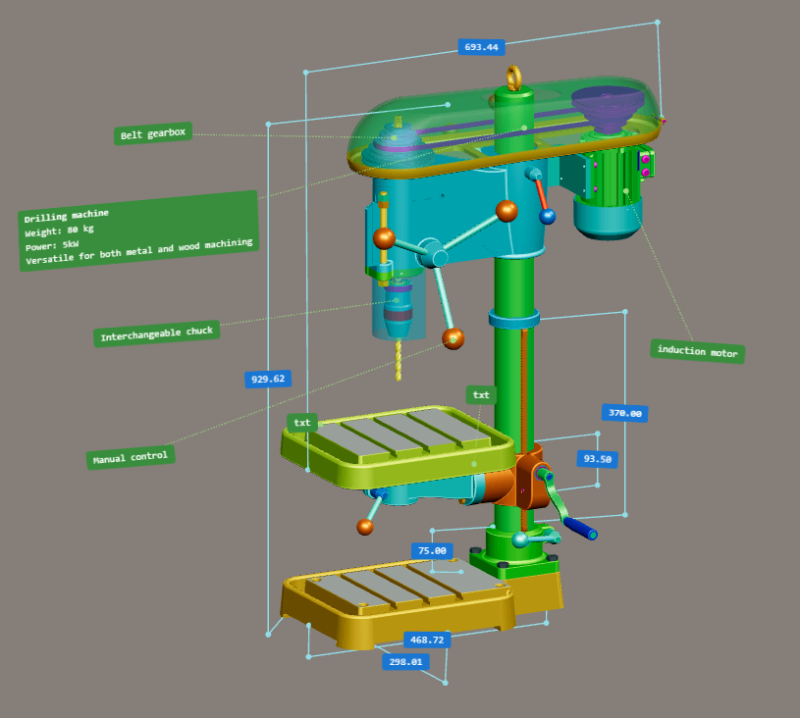

Meshbex
CAD Explorer in your browser
Meshbex is a free web-based CAD explorer for engineers, makers, and anyone who needs to open 3D files and work with them on their own device.

Why Meshbex exists
Meshbex was originally created at the request of the automotive industry, in response to unsustainable CAD prices, especially when collaborating with suppliers.
Today
Meshbex is used worldwide — far beyond automotive — wherever teams need to work with 3D and related data in a single, unrestricted environment.
A CAD workspace, not only a viewer
The whole product is in the browser. One environment: 3D, docs, attachments. Processed on your PC.
-
Top security
Your data is processed on your PC, not on a Meshbex server.
-
Full app, free for everyone
The full app is available to everyone. No paid plan and no locked features.
-
Fast on a regular PC
Meshbex is a mesh workspace, not a heavy CAD system. A normal laptop is enough for full work — not only viewing.
-
Measure, dimension, annotate
Place measurements, CAD dimensions, and annotations on the model.
-
Section views
Cut through the model to see inside.
-
One environment: 3D, docs, attachments
Open attachments next to the model. Edit images, run OCR, and edit PDF pages. Everything stays in the GLB.
-
File history in the file
Each save can record who saved, when, and a comment. The evidence travels with the GLB — not on a server.
-
Workflows and arrangements
Build animated assembly and explode sequences. Capture named arrangements for exploded, service, or packing poses.
-
Web and desktop, online and offline
Use Meshbex in the browser or as a desktop app. Online or offline. Optional PWA install, no admin rights.
-
Simple enough for the whole team
Not only for mechanical engineers. Purchasing, process, and management can open the same file without CAD training.
-
Advanced analysis
Volume, mass from density, centre of gravity, and moments of inertia — fast, on a regular PC.
Who Meshbex is for
One file, simple controls — useful beyond the design office.
-
Engineering
Open the model, take sections and dimensions, review assembly steps, and check mass properties.
-
Purchasing
Open a supplier STEP or GLB locally, see the assembly, and share one file. Fast on a regular PC.
-
Process / technology
Use workflows and arrangements, then export a self-contained HTML presentation for the shop floor.
-
Management
No install project, no admin rights. Your data is processed on your PC. File history shows who saved what, in the model itself.
See it in action
Real screenshots from the Meshbex workspace.



One GLB to work in — CAD formats to get there
GLB is the primary Meshbex format — geometry, materials, hierarchy, assembly, documents, attachments, and file history in one compact package. Import common CAD and mesh formats, then keep and share the project as GLB.
- GLB / glTF
- STL
- OBJ
- FBX
- 3MF
- STEP / STP
- IGES / IGS
Guides
Public help articles — open any of them without launching the app.
-
Beginner guide
Start here if you are new to Meshbex.
-
Users guide — 3D models
Working with models in the CAD Explorer.
-
Screen layout
Toolbar, panels, outliner, and viewport.
-
Mouse & keyboard
Navigate, select, and edit with simple controls.
-
Supported file formats
Import and export, including GLB, STEP, and STL.
-
Install as PWA
Offline use in Chrome or Edge — no admin rights.
Frequently asked questions
Where Meshbex came from, price, privacy, and how it runs.
Why was Meshbex created?
Meshbex was originally created at the request of the automotive industry, in response to unsustainable CAD prices, especially when collaborating with suppliers.
Is the full Meshbex app free?
Yes. The full Meshbex CAD Explorer is free for everyone. There is no paid plan and no locked feature set.
Do I need an account or login?
No. Open Meshbex in your browser and start working immediately. No registration or account is required.
Is my data secure?
Yes. Top security: your data is processed on your PC, not on a Meshbex server.
Do I need CAD software or a workstation?
No. Meshbex is a mesh workspace in the browser, not a parametric CAD system. It is built to run on a regular PC.
What is stored in a GLB file?
GLB is the primary Meshbex format. One file can hold geometry, materials, hierarchy, assembly workflows, arrangements, documents, attachments, and file history. GLB files are typically much smaller than other 3D formats.
Can I open and edit attachments?
Yes. Open images, PDFs and other viewable files next to the 3D model. Edit images, recognize text with OCR, and edit PDF pages. Attachments stay in the GLB with the model.
Which file formats are supported?
Import GLB / glTF, STL, OBJ, FBX, 3MF, STEP/STP, and IGES/IGS. Export GLB, STL, STEP, and a self-contained HTML viewer. STEP import tessellates CAD B-Rep for display, STEP export writes the current mesh, not original NURBS. See the supported file formats guide.
Do I need admin rights to install Meshbex?
No. You can use Meshbex in the browser with no install. The optional PWA install is one click in Chrome or Edge and does not require an admin account.
Can I use Meshbex offline?
Yes, after installing Meshbex as a Progressive Web App (PWA). You can then open GLB, STEP, IGES and other supported files and work without a network.
Is Meshbex only for mechanical engineers?
No. Controls are simple enough for purchasing, process/technology, and management as well as engineering. Share one GLB. Fast on a regular PC. See who Meshbex is for.
Does Meshbex offer advanced analysis?
Yes. Meshbex can report volume, mass from a density you set, centre of gravity, and moments of inertia — fast, on a regular PC.
Where can I read the help guides?
Public help articles are listed in Guides on this page, including the beginner guide.